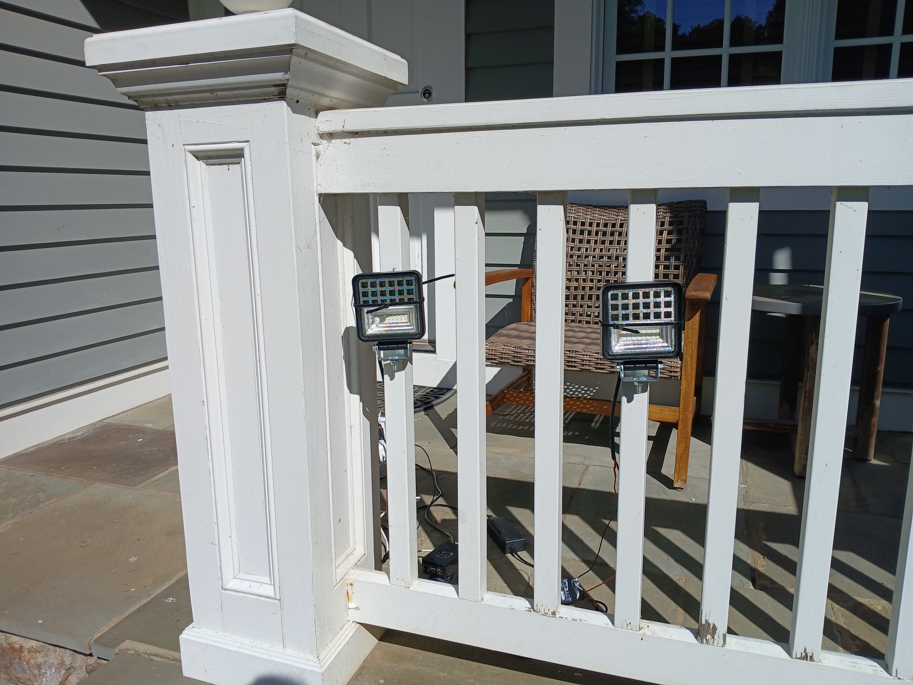
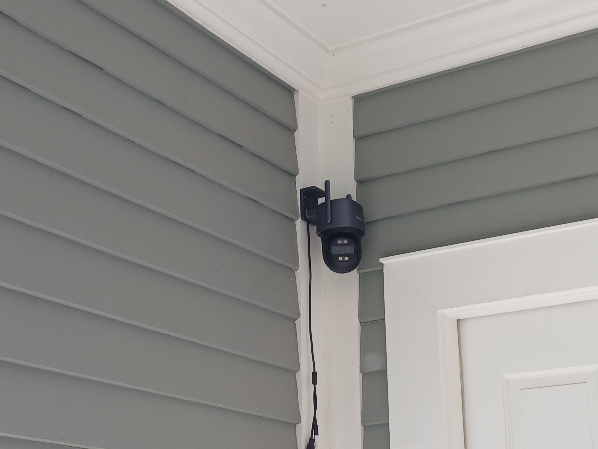

Harnessing AI & GPUs for Smarter Environments
Massed Compute is proud to introduce an intelligent wildlife deterrent system that utilizes high-performance GPUs and AI object detection to safeguard your property from unwanted animal activity.
Using advanced YOLO-based object detection models, our system can detect and classify animals such as deer, dogs, and more in real-time. Alerts can trigger lights, speakers, and sprinklers to gently deter animals without harm.
Our infrared-capable Reolink cameras provide round-the-clock surveillance for optimal detection.
Below is an example of a deer triggering the deterrent system and being safely discouraged from entering the property:
The system runs on cloud GPUs, including RTX A6000 and H100 hardware, ensuring low latency and high accuracy even with multiple cameras connected simultaneously.
Homeowners, farms, golf courses, vineyards, and anyone seeking an ethical, automated way to manage wildlife intrusions.